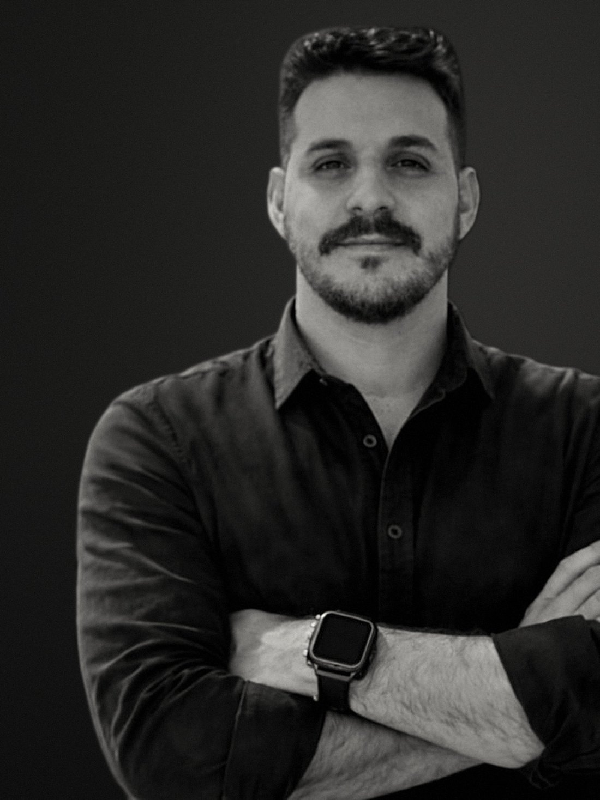

sobre
Oito anos em aço leve.
Steel frame desde 2018, em canteiro, dentro de construtora. Hoje o projeto, a estrutura e a engenharia tributária da obra saem com a mesma assinatura.

Trajetória
- 2018
- Estágio em construtora de steel frame
- 2020
- Formação em engenharia civil e entrada em administradora de obras em steel frame
- 2022
- Engenheiro em construtora de steel frame
- 2023
- Início da operação própria
- 2026
- Dedicação integral ao escritório
O que entrego
Projeto executivo em steel frame
Painéis, tesouras, plano de corte e caderno de montagem. O montador não interpreta, monta.
Projetos complementares
Fundação, elétrica e hidráulica compatibilizadas com a estrutura no mesmo modelo.
Acompanhamento de obra
Do radier à cobertura, com a mesma responsabilidade técnica do projeto.
INSS e CNO da obra
Cadastro, enquadramento e regularização para a obra não pagar contribuição a mais.
Registro
- CREA-SP
- 5071068977
- Base
- Marília, SP. Projetos em todo o Brasil